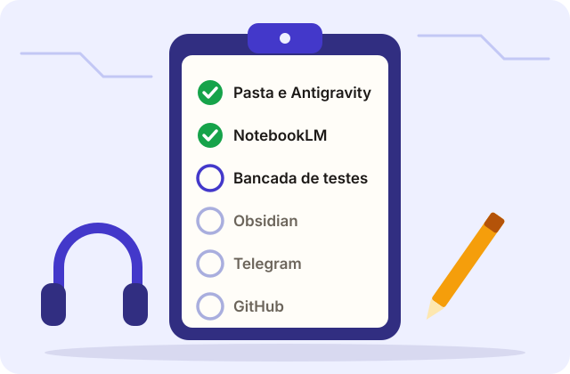
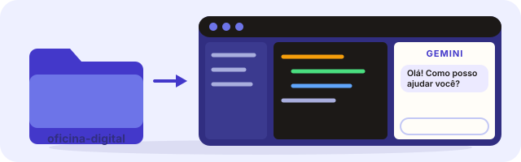
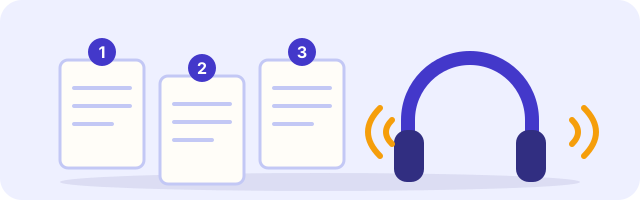
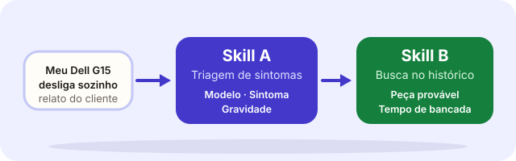
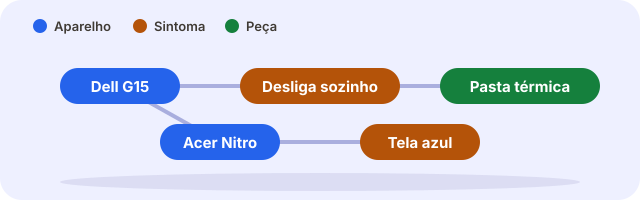
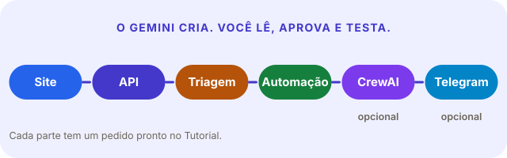
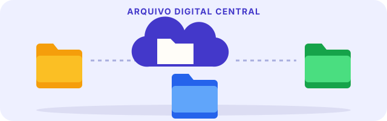

Manual do aluno
Seu manual de técnico de bancada
Textos curtos, áudio, imagem e clique. Cada etapa termina com um comprovante simples: um print, uma foto ou um áudio.
- 6etapas
- 3formas de comprovar
- 0relatórios para escrever

Faça uma etapa de cada vez, na ordem, de 1 a 6. Quando terminar uma, marque a caixinha "Etapa feita" no fim dela.
Seu percurso
- 1Sua pasta e o ajudante de códigoAntigravity
- 2Assistente que lê em voz altaNotebookLM
- 3Bancada de Testes de IAGemini e Skills
- 4Quadro de Fichas e LigaçõesObsidian e Graphify
- 5Construa o projetoGemini e Tutorial
- 6Arquivo Digital CentralGitHub no final
Como provar cada etapa
Print da tela
Aperte as teclas Windows + Shift + S e escolha a área.
Foto do celular
Tire uma foto da tela do computador ou do próprio celular.
Áudio de até 1 minuto
Conte com a sua voz o que você fez. Não precisa escrever.
As 6 etapas
1Sua pasta e o ajudante de código (Antigravity)

Você vai trabalhar numa pasta sua, aberta no Antigravity, um editor de código do Google. Dentro dele mora o Gemini, o assistente de IA que ajuda você a construir o projeto, do começo ao fim.
- Você tem uma conta Google pessoal (de preferência
@gmail.com). - Você tem 18 anos ou mais.
- Seu computador tem Windows 10 de 64 bits ou mais novo.
- O Brasil está na lista de países liberados.
Instalar o Antigravity
- Abra antigravity.google/download.
- Escolha Windows (versão x64). A página mostra mais de um produto (por exemplo, o Antigravity 2.0 no topo). Role até Antigravity IDE (Standalone) e clique em Download for x64. Os nomes podem mudar: procure o IDE, o editor onde se abre uma pasta.
- Abra o arquivo baixado e siga as telas do instalador.
- Ao abrir o programa, entre com a sua conta Google.
Criar a sua pasta de trabalho
- Abra a pasta Documentos do Windows.
- Clique com o botão direito num espaço vazio → Novo → Pasta.
- Dê o nome
oficina-digital(minúsculo, sem acento e sem espaço).
Abrir a pasta no Antigravity
- No Antigravity, procure no menu a opção de abrir pasta (em inglês: File → Open Folder).
- Escolha a pasta
oficina-digital. Ela está vazia, e isso é normal. - O painel do assistente fica do lado direito do editor. É ali que você conversa com o Gemini.
Diga olá ao Gemini
Olá! Sou aluno iniciante. Fale sempre em frases curtas e palavras simples. Explique, em 5 linhas, o que você pode fazer por mim nesta pasta e como eu devo pedir as coisas.
2Assistente que lê em voz alta NotebookLM

O NotebookLM lê os documentos e explica em áudio. Aqui ele ensina o que você vai construir. Você estuda de fone de ouvido.
Os 4 documentos de estudo
1. Especificação da oficina 2. Defeitos comuns 3. Catálogo de peças 4. Histórico de serviços
- Abra notebooklm.google.com e entre com a conta Google.
- Clique em Novo caderno.
- Adicionar fonte → envie os 4 arquivos (baixe cada um antes).
- Adicione também as páginas deste site. Procure a opção de adicionar site (Website) e cole um endereço de cada vez:
https://rcminitor.github.io/Oficina_CuCa_IA/sobre.html https://rcminitor.github.io/Oficina_CuCa_IA/aluno.html https://rcminitor.github.io/Oficina_CuCa_IA/tutorial.html https://rcminitor.github.io/Oficina_CuCa_IA/chaves.html
Antes de abrir o NotebookLM
O caderno é uma pasta de estudo. Você coloca fontes (textos, páginas) e ele só responde com base nelas. Por isso ele erra menos que um chat comum.
| Palavra | Quer dizer |
|---|---|
| Caderno (notebook) | Seu espaço de estudo. |
| Fonte (source) | Cada documento ou página que você coloca nele. |
| Resumo em áudio | Dois locutores conversam sobre as fontes. |
| Conversa (chat) | Campo onde você faz perguntas sobre as fontes. |
Ouvir o resumo em áudio
- Clique em Resumo em áudio (Audio Overview). Espere alguns minutos.
- Clique em Play. Coloque o fone.
Pergunta pronta (copie e cole na conversa):
Meu cliente disse que o notebook desliga sozinho. Quais peças eu devo olhar primeiro? Responda em 5 linhas curtas.
Para que o NotebookLM serve no projeto inteiro
O NotebookLM não é só desta etapa. Ele é o seu colega de estudo do começo ao fim. A diferença para um chat comum: ele responde só com o que está nas suas fontes, então erra menos sobre este projeto.
| Quando | Como usar |
|---|---|
| Antes de cada passo | Pergunte o que a parte faz. Cada passo do tutorial traz uma pergunta pronta. |
| Depois do Gemini criar algo | Compare. O Gemini fez o que a Especificação pede? Se não, diga ao Gemini. |
| Quando não entender uma palavra | Pergunte: "Explique o que é X, em palavras simples." |
| No caminho, de fone | Ouça o resumo em áudio de novo. A repetição ajuda a fixar. |
| Antes de entregar | Peça uma lista de conferência do projeto e marque cada item. |
Personalize o áudio
Antes de gerar o resumo em áudio, procure a opção de personalizar (Customize). Escreva um pedido, por exemplo:
Explique para um iniciante. Use frases curtas e palavras simples, e exemplos de oficina de computadores. Foque nas partes do projeto e na ordem em que elas trabalham.
Como o NotebookLM muda o seu resultado
- Menos erros: você sabe o que a parte deve fazer antes de pedir ao Gemini, então percebe quando ele errou.
- Menos leitura: você escuta em vez de ler.
- Menos dúvida: você pergunta em português simples e recebe resposta no seu ritmo.
- Mais autonomia: você confere o assistente, em vez de só aceitar.
Perguntas para treinar
Depois do áudio, faça estas perguntas na conversa, uma de cada vez:
- "Quais são as 5 partes do projeto Oficina Digital? Responda em lista curta."
- "O que é um grafo de conhecimento, em palavras simples?"
- "Quais peças aparecem para o Dell G15?"
Compare cada resposta com a Especificação. Bateu? Ótimo. Não bateu? Diga ao professor.
3Bancada de Testes de IA (Gemini)

Aqui você testa a IA antes de usar no trabalho de verdade. Duas ferramentas de prompt (Skills):
| Skill | Entra | Sai |
|---|---|---|
| A — Triagem | Relato do cliente | Modelo + Sintoma + Gravidade |
| B — Busca no histórico | Modelo + Sintoma | Peça provável + tempo de bancada |
- Use o Gemini do Antigravity (painel à direita) ou abra gemini.google.com.
- Copie a Skill A e troque o relato.
O texto """COLE O RELATO AQUI""" é um espaço em branco: apague essa frase e escreva o relato no lugar, mantendo as aspas triplas em volta.
Skill A — Triagem de Sintomas
Você é atendente de oficina de informática. Leia o relato do cliente. Responda SOMENTE neste formato, uma linha cada: Modelo: ... Sintoma principal: ... Gravidade: BAIXA, MÉDIA ou ALTA Se faltar informação, escreva "não informado". Não invente. Relato: """COLE O RELATO AQUI"""
Skill B — Busca no histórico (GraphRAG)
Você é técnico de bancada. Use APENAS o histórico abaixo. Dado o modelo e o sintoma, diga: Peça provável: ... Tempo de bancada: ... Casos parecidos: (número da ordem de serviço) Se o histórico não tiver caso parecido, responda "sem histórico". Modelo: COLE_AQUI Sintoma: COLE_AQUI Histórico: """COLE AQUI A TABELA DO DOCUMENTO 4"""
Onde pegar o histórico da Skill B
Abra o documento 4 (Histórico de serviços) pelo link da Etapa 2. Selecione a tabela inteira, copie e cole no lugar de COLE AQUI A TABELA DO DOCUMENTO 4. Preencha também o modelo e o sintoma.
Três chamados de treino, com a resposta esperada
Teste estes três relatos. As palavras da IA mudam um pouco a cada vez. O que importa é o conteúdo.
| Relato do cliente | A Skill A deve dizer | A Skill B deve dizer |
|---|---|---|
| "Meu Dell G15 desliga sozinho quando eu jogo." | Modelo: Dell G15. Sintoma: desliga sozinho. Gravidade: média ou alta. | Peça: pasta térmica. Cerca de 35 a 40 min. Casos 101 e 108. |
| "O Acer Nitro 5 está com a tela toda preta." | Modelo: Acer Nitro 5. Sintoma: tela preta. | Peça: cabo flat. Cerca de 1 h. Caso 104. |
| "Meu computador está esquisito." | Modelo e sintoma: não informado. | Sem histórico. |
Se algo não deu certo
| O que aconteceu | O que fazer |
|---|---|
| A IA respondeu com muito texto, fora do formato | Escreva: "Responda SOMENTE no formato pedido, sem explicar." |
| A Skill B inventou uma peça | Confira se colou a tabela. Sem ela a IA chuta. |
| A Skill B respondeu "sem histórico" num caso que está na tabela | Confira se o modelo está escrito igual ao da tabela (por exemplo, "Dell G15"). |
| Apareceram as aspas triplas na resposta | Sem problema. Pode ignorar. |
Desafio de Decisão
Depois dos 3 chamados de treino, conte por áudio:
- Em qual chamado usei a Skill A? Por quê?
- Em qual usei a Skill B? Por quê?
- Em qual usei as duas juntas? Por quê?
4Quadro de Fichas e Ligações Obsidian

O Obsidian guarda fichas e desenha as ligações entre elas.
| Cor | O que é | Exemplo |
|---|---|---|
| Azul | Aparelho | Notebook Dell G15 |
| Laranja | Sintoma | Desliga sozinho |
| Verde | Solução / Peça | Troca de pasta térmica |
- Baixe em obsidian.md (grátis) e instale.
- Create new vault, nome:
Oficina. - Crie 3 notas. O texto com
[[ ]]cria a ligação:
Nota "Notebook Dell G15": #aparelho Sintoma: [[Desliga sozinho]] Nota "Desliga sozinho": #sintoma Solução: [[Troca de pasta térmica]] Nota "Troca de pasta térmica": #solucao Tempo de bancada: 40 minutos.
- Menu da esquerda → ícone do grafo (bolinhas ligadas).
- No grafo, abra Grupos e crie 3 cores:
tag:#aparelhoazul,tag:#sintomalaranja,tag:#solucaoverde.
Se algo não funcionar no Obsidian
| O que aconteceu | O que fazer |
|---|---|
| A ligação não vira bolinha no grafo | Confira se escreveu [[ com dois colchetes de cada lado e se o nome é igual ao da nota. |
| Aparece uma bolinha cinza sem nota | A nota ainda não existe. Clique na ligação para criá-la. |
| As cores não aparecem | Em Grupos, escreva tag:#aparelho com o jogo da velha e escolha uma cor. Confira se a nota tem a etiqueta #aparelho. |
| Não acho o ícone do grafo | Aperte Ctrl + G para abrir o grafo. |
No Graphify, a cor mostra o grupo de assunto (ele escolhe sozinho). O azul, laranja e verde da etapa acima você escolhe à mão no Obsidian. Use a caixa Search nodes para achar uma bolinha e clique nela para ver os detalhes.
Ver o grafo da oficina (feito pelo Graphify)
Este grafo foi montado pelo Graphify a partir dos 3 documentos da oficina. Procure o Dell G15 e siga: aparelho → sintoma → peça.
5Construa o projeto com o Gemini (o Tutorial)

Agora você constrói. Peça ao Gemini, parte por parte, e ele cria os arquivos na sua pasta. Você lê, aprova e testa. O Tutorial tem um pedido pronto para cada parte, com botão de copiar.
Como funciona cada parte
O jeito de trabalhar é sempre o mesmo, em quatro movimentos:
| Movimento | O que você faz |
|---|---|
| 1. Pedir | Copie o pedido pronto do Tutorial e cole no painel do Gemini. |
| 2. Ler | Veja o que ele quer criar ou rodar. Só aceite se entender. |
| 3. Testar | Abra o site, ligue a API, rode o programa e veja o resultado. |
| 4. Provar | Tire o print que o passo pede e marque a caixinha. |
Tempo: uns 20 a 40 minutos por parte. O projeto inteiro, em várias aulas.
O que você vai criar
- O site: o formulário do chamado.
- A API: guarda os chamados num banco de dados.
- A triagem com o grafo: faz o laudo.
- A automação em Python: o robô de reserva.
- O agente CrewAI, no Google Colab: a dupla de especialistas. Opcional.
- O Rádio do Técnico (Telegram): avisos e comandos no celular. Opcional.
Quando o resultado não é o esperado
| O que aconteceu | O que fazer |
|---|---|
| O código do Gemini deu erro | Copie a mensagem do terminal (sem chaves) e escreva: "Apareceu este erro. Explique em palavras simples e corrija passo a passo." |
| Você não entendeu o que ele quer fazer | Escreva: "Explique de novo, em palavras simples, antes de continuar." |
| O Gemini mudou arquivos que você não pediu | Recuse a mudança e peça: "Faça só o que pedi, nada além." |
| O Gemini sugeriu instalar o Node.js | Responda: "Use só Python e HTML, sem Node." |
| O Gemini pediu a sua senha ou chave no chat | Não envie. Peça: "Mostre onde eu coloco a chave sem escrever aqui." |
| A cota do Gemini acabou | Espere renovar (toda semana) ou use o gemini.google.com. |
| Travou há mais de 15 minutos | Chame o professor. Não fique parado. |
Como saber que terminou
- Você abre um chamado no site e recebe um número.
- Em Acompanhar, esse número mostra status, prioridade e laudo.
- A API está ligada e o terminal mostra
Uvicorn running. - As partes opcionais (CrewAI e Telegram) funcionam, ou você anotou onde travou.
O projeto de referência do professor está no gabarito. O seu pode ser diferente e estar certo: o que vale é cumprir a Especificação.
6Arquivo Digital Central GitHub (no final)

Só agora, no final, entra o GitHub: uma pasta compartilhada na internet. Nada se perde. Você vai levar a sua pasta oficina-digital para lá, com a ajuda do Gemini.
Criar a conta (grátis)
- Abra github.com.
- Clique em Sign up (canto de cima, à direita).
- Preencha e-mail, senha e nome de usuário.
- Resolva o teste "não sou robô". Clique em Create account.
- Abra seu e-mail (olhe também em Spam) e clique em Verify email address.
Instalar o Git (se faltar)
O Git guarda as versões da sua pasta e leva para o GitHub. Confira no terminal com git --version. Se não aparecer uma versão:
- Abra git-scm.com/download/win e baixe o instalador.
- Abra o arquivo e clique em Next até o fim. As opções padrão servem.
- Feche e abra de novo o terminal e o Antigravity.
Levar a sua pasta para o GitHub
Peça ao Gemini, no painel do Antigravity:
Ajude-me a enviar esta pasta para o GitHub. Estamos no final do projeto. 1) Crie um arquivo .gitignore para NÃO enviar chaves, tokens, o ambiente virtual (.venv), o banco de dados e arquivos .env. 2) Confira se algum arquivo tem chave ou token escrito. Se tiver, me avise e NÃO envie. 3) Explique, em passos curtos, o que são git init, commit e push. 4) Diga como instalar o Git no Windows, se faltar, e como criar o repositório no GitHub. 5) Peça minha permissão antes de cada comando. Eu faço o login no GitHub. NUNCA peça nem aceite que eu cole senha ou token no chat.
Depois do envio: confira no GitHub
- Abra github.com e entre na sua conta.
- Clique no seu repositório.
- Veja se as pastas
siteeapiaparecem. - Confira que o arquivo
.envNÃO aparece. Se aparecer, chame o professor agora: a chave vazou e precisa ser trocada.
Se algo der errado no envio
| O que aconteceu | O que fazer |
|---|---|
git não é reconhecido | Instale o Git (acima) e feche e abra de novo o terminal. |
| Pediu nome e e-mail | O Git quer saber quem você é. Peça ao Gemini: "Configure meu nome e e-mail no Git, e me diga o que digitar". |
| Abriu a janela de login do navegador | É normal. Entre na sua conta do GitHub ali. |
| Pediu um token | Não cole nada no chat. Peça ao Gemini para usar o login pelo navegador, ou chame o professor. |
| Disse "rejected" ou "failed to push" | Copie a mensagem (sem chaves) e peça ao Gemini para explicar. |
| Enviou um arquivo errado | Não apague no GitHub. Chame o professor. |
Vídeos em português
Canal Curso em Vídeo, do Prof. Gustavo Guanabara. É um curso grátis que ensina Git e GitHub sem digitar comandos.
O que é GitHub? Pra que ele serve? (37 min) Curso completo (13 vídeos)
Estudar mais
- Bancada: no YouTube, procure MW Informática e Emerson BR. Termos: "como trocar pasta térmica notebook", "tela azul Windows o que fazer".
- IA sem matemática: procure "o que é inteligência artificial explicado simples".